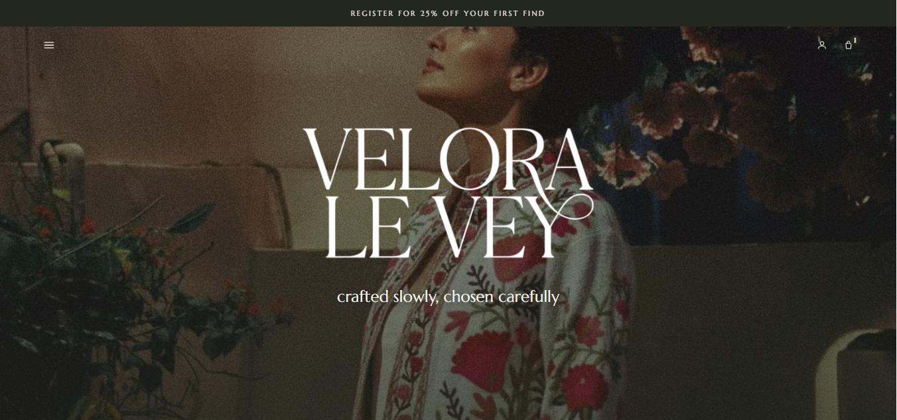

veloralevey.co.uk

Ver sitePROJETO DE CLIENTE · MODA & LIFESTYLE
Velora Le Vey
Uma loja online com a personalidade de uma marca artesanal. Design editorial, catálogo de produtos e pagamentos integrados — uma casa própria para vender online.